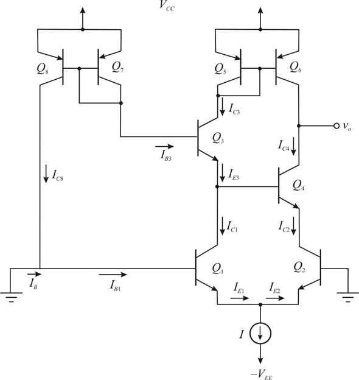
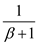
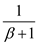
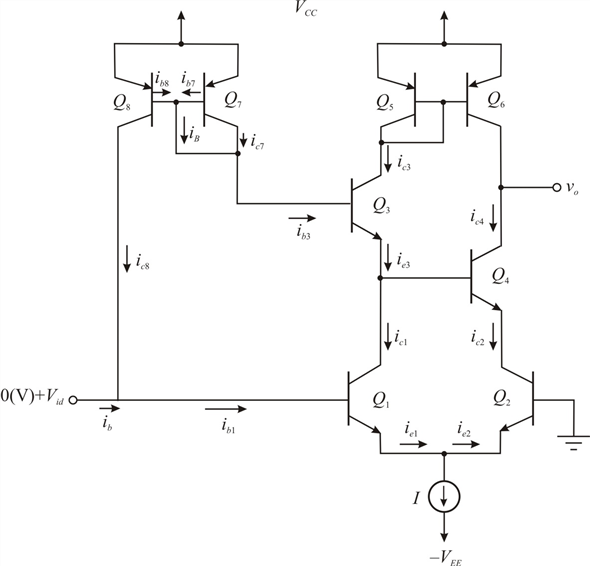
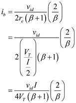

Step 1:
Refer to Figure P8.104 in the text book.
(a)
Draw the equivalent circuit for.

Figure 1
Step 2:
From the above circuit, the base voltages of are same (That is, 0 V). Since  are matched transistors, and assuming an ideal bias current source I with infinite output resistance, it follows that the current I will remain constant and from symmetry that I will divide equally between the two devices.
are matched transistors, and assuming an ideal bias current source I with infinite output resistance, it follows that the current I will remain constant and from symmetry that I will divide equally between the two devices.

The collector currents for are,
Step 3:
From the above circuit, the emitter current of  is equal to the collector current of
is equal to the collector current of  . The collector current of is,
. The collector current of is,
The transistors  are act as a simple current mirror circuit, the collector current of
are act as a simple current mirror circuit, the collector current of  is,
is,
Step 4:
The base current of  is,
is,
The transistors  are act as a simple current mirror circuit, the collector current of
are act as a simple current mirror circuit, the collector current of  is,
is,
Step 5:
The base current of

is,
Step 6:
Using Kirchhoff’s current law to the above circuit, the current  becomes
becomes
Simplify further.
Therefore, the current  is .
is .
Step 7:
Without connections the current  is,
is,
Therefore, without connections  the current
the current  is
is .
.
Hence, the current  is reduced by factor .
is reduced by factor .
Step 8:
(b)
Draw the equivalent circuit for .

Figure 2
Step 9:
Determine the expression for the base current.
Simplify further.
Therefore, the input signal current  is .
is .
Step 10:
The input differential resistance is,
Substitute for.
Therefore, the input differential resistance  is .
is .
Step 11:
Determine the signal current  with connections .
with connections .
Apply Kirchhoff’s current law at node  .
.
The transistors  are act as a simple current mirror circuit, then the collector current of
are act as a simple current mirror circuit, then the collector current of  becomes
becomes
Hence, the signal current  becomes
becomes
Simplify further.
Simplify further.

Simplify further.
Step 12:
Simplify further.

Therefore, the input signal current is .
is .
Step 13:
Determine the input differential resistance .
.
Substitute for .
.
Therefore, the input differential resistance with connections  is
is
.